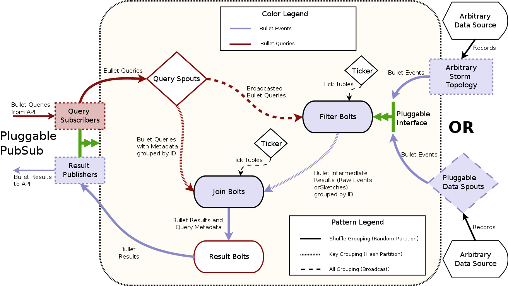

Storm architecture
This section describes how the Backend architecture is implemented in Storm.
Topology
For Bullet on Storm, the Storm topology implements the backend piece from the full Architecture. The topology is implemented with the standard Storm spout and bolt components:

The components in Architecture have direct counterparts here. The Query spouts reading from the PubSub layer using plugged-in PubSub consumers make up the Request Processor. The Filter bolts and your plugin for your source of data (generally a spout but could be a topology) make up the Data Processor. The Join bolt and the Result bolt make up the Combiner.
The red colored lines are the path for the queries that come in through the PubSub and the blue is for the data from your data source. The pattern on the lines denote how the data (Storm tuples) is moved to the next component. Dashed indicates a broadcast (sent to all instances of the component), dotted indicates a key grouping (sent to a particular instance based on hashing on a particular field), and solid indicates a shuffle (randomly sent to an instance).
What's a Ticker?
The Ticker component is attached to the Filter and Join Bolts produce Storm tuples at predefined intervals. This is a Storm feature (and is configurable when you launch the Bullet topology). These tuples, called tick tuples, behave like a CPU clock cycles for Bullet. Bullet performs all its system related activities on a tick. This includes purging stale queries, emitting left over data for queries, etc. We could have gone the route of having asynchronous threads that do the same thing but this was a far more simpler solution. The downside is that Bullet is as fast or as slow as its tick period, which can only go as low at 1 s in Storm. In practice, this means that your window is longer by a tick and you can accommodate that in your query if you wish.
As a practical example of how Bullet uses ticks: when the final data is emitted from the Filter bolts when the query has expired, the Join bolt receiving it waits for 3 (this is configurable) ticks after its query expires to collect all the last intermediate results from the Filter bolts. If the tick period is set as high as 5 s, this means that a query will take 3 * 15 or 15 s to get back after its expiry! Setting it to 1 s, makes it 1 * 3 s. By changing the number of ticks that the Join bolt waits for and the tick period, you can get to any integral delay >= 1 s.
Data processing
Bullet can accept arbitrary sources of data as long as they can be read from Storm. You can either:
- Write a Storm spout that reads your data from where ever it is (Kafka etc) and converts it to Bullet Records. See Quick Start for an example.
- Hook up an existing topology that is doing something else directly to Bullet. You will still write and hook up a component that converts your data into Bullet Records in your existing topology.
| Pros | Cons | |
|---|---|---|
| Option 1 | Very simple to get started. Just implement a spout | Need a storage layer that your spout pulls or some system has to push to your spouts |
| Option 2 | Saves a persistence layer | Ties your topology to Bullet directly, making it affected by Storm Backpressure etc |
| Option 2 | You can add bolts to do more processing on your data before sending it to Bullet | Increases the complexity of the topology |
Your data is then emitted to the Filter bolt. If you have no queries in your system, the Filter bolt will promptly drop all Bullet Records and do absolutely nothing. If there are queries in the Filter bolt, the record is checked against the filters in each query and if it matches, it is processed by the query. Each query type can choose to emit matched records in micro-batches. By default, RAW or LIMIT queries do not micro-batch. Each matched record up to the maximum for the query is emitted at once at the Filter bolt. Queries that aggregate, on the other hand, keep the query around till its duration is up and emit the local result. This is because these queries cannot return till they see all the data in your time window anyway because some late arriving data may update an existing aggregate. When the upcoming incremental results lands, queries will periodically (configurable) emit their intermediate results for combining in the Join bolt.
Why support micro-batching?
RAW queries do not micro-batch by default, which makes Bullet really snappy when running those queries. As soon as your maximum record limit is reached, the query immediately returns. You can use a setting in bullet_defaults.yaml to turn on batching if you like. In the near future, micro-batching will let Bullet provide incremental results - partial results arrive over the duration of the query. Bullet can emit intermediate aggregations as they are all additive.
Request processing
The Query spouts fetch Bullet queries through the PubSub layer using the Subscribers provided by the plugged in PubSub layer. The queries received through the PubSub also contain information about the query such as its unique identifier and potentially other metadata. The Query spouts broadcasts the query body to every Filter bolt. Since every Filter bolt has a copy of every query, the shuffled data from the source of data can be compared against the query no matter which particular Filter bolt it ends up at. Each Filter bolt has access to the unique query id and is able to key group by the id to the Join bolt with the intermediate results for the query.
The Query spout also key groups the query and additional query metadata to the Join bolts. This means that the query and the metadata will be end up at exactly one Join bolt.
Combining
Since the data from the Query spout (query and metadata) and the data from all Filter bolts (intermediate results) is key grouped by the unique query id, only one particular Join bolt receives both the query and the intermediate results for a particular query. The Join bolt can then combine the intermediate results and produce a final result. This result is joined (hence the name) along with the metadata for the query and is shuffled to the Result bolts. This bolt then uses the particular Publisher from the plugged in PubSub layer and uses the metadata if it needs to and sends the results back through the PubSub layer to the requestor.
Combining and operations
In order to be able to combine intermediate results and process data in any order, all aggregations that Bullet does need to be associative and have an identity. In other words, they need to be Monoids. Luckily for us, the DataSketches that we use are monoids when exact (COUNT DISTINCT and GROUP BY actually are commutative monoids). Sketches can be unioned and thus all the aggregations we support - SUM, COUNT, MIN, MAX, AVG, COUNT DISTINCT, DISTINCT etc - are monoidal. (AVG is monoidal if you store a SUM and a COUNT instead). When DISTRIBUTION and TOP K Sketches are approximating, they may end up not being associative since they depend on the distribution of the data but you can think of them this way if you include their defined error functions bounding the result of the operation.
Scalability
The topology set up this way scales horizontally and has some nice properties:
- If you want to scale for processing more data but the same amount of queries, you only need to scale the components that read your data (the spout reading the data or your custom topology) and the Filter bolts.
- If you want to scale for more queries but the same amount of data, you generally need to scale up the Filter Bolts. If you need it, you can scale the Query spouts, Join bolts and Result bolts. You should ensure that your PubSub layer (if you're using the Storm DRPC PubSub layer, then this is the number of DRPC servers in your Storm cluster) can handle the volume of queries and results being sent through it. These components generally have low parallelisms compared to your data processing components since the data volume is generally much higher than your query volume, so this is generally not needed.
See Scaling for more Queries and Scaling for more Data for more details.
More queries and Filter bolts
If you send more queries to the Filter bolt, it will be limited by at most how many queries a Filter bolt can store and still process data efficiently. Factors like CPU, memory allocations etc for the Filter bolts come in to the picture in addition to the parallelism. Generally, if you have allocated enough Filter bolts to process your data with enough head room, this should let you run hundreds of queries simultaneously before you run into these issues. In practice, since most usage is expected to be on large data volumes and 100s of queries simultaneously, you will need to scale the the Filter bolts out so that they are not slowed down by the large number of queries in each.